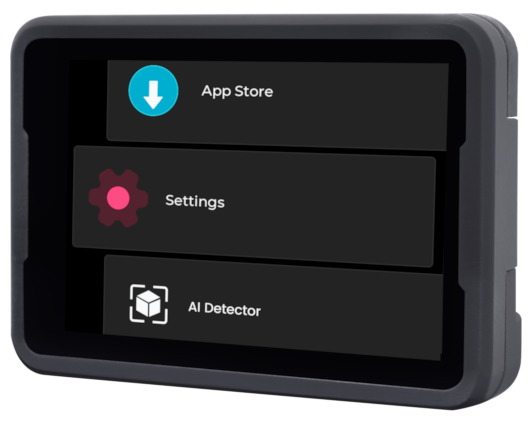
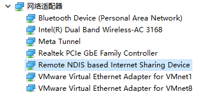
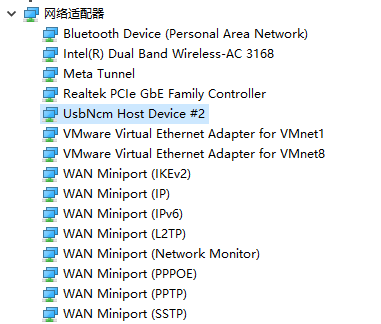

English
EnglishMaixCAM2 MaixPy Quick Start
Getting Started
MaixCAM2 has built-in eMMC storage, so it can operate without requiring a TF card. If you need to upgrade or flash the system, please refer directly to the System Upgrade and Flashing guide.
Power On
Use a Type-C data cable to connect the MaixCAM device and power it on. Wait for the device to boot up and enter the function selection interface.

If the screen does not display:
- Please confirm that you purchased the bundled TF card. If you confirm that you have a TF card and it is inserted into the device, you can try updating to the latest system.
- If you did not purchase the TF card bundle, you need to follow the instructions in updating to the latest system to flash the latest system onto the TF card.
- Also, ensure that the screen and camera cables are not loose. The screen cable can easily come off when opening the case, so be careful.
Connect to the Network
For the first run, you need to connect to the network, as you will need it later to activate the device and use the IDE.
If you don't have a router, you can use your phone to open a hotspot.
Click Settings on the device and select WiFi. There are two ways to connect to the WiFi hotspot:
- Scan the WiFi sharing code:
- Use your phone to share the
WiFihotspot QR code, or go to maixhub.com/wifi to generate a QR code. - Click the
Scan QR codebutton, the camera screen will appear, scan the QR code generated previously to connect.
- Use your phone to share the
- Search for hotspots:
- Click the
Scanbutton to start scanning the surroundingWiFi, you can click multiple times to refresh the list. - Find your WiFi hotspot.
- Enter the password and click the
Connectbutton to connect.
- Click the
Then wait for the IP address to be obtained, which may take 10 to 30 seconds. If the interface does not refresh, you can exit the WiFi function and re-enter to view it, or you can also see the IP information in Settings -> Device Information.
Update the Runtime Libraries
This step is very important!!! If this step is not done properly, other applications and functions may not work (e.g., they may crash).
- First, ensure that you have completed the previous step of connecting to WiFi and have obtained an IP address to access the internet.
- On the device, click
Settings, and selectInstall Runtime Libraries. - After the installation is complete, you will see that it has been updated to the latest version. Then exit.
If it shows Request failed or 请求失败 (Request failed), please first check if the network is connected. You need to be able to connect to the internet. If it still doesn't work, please take a photo and contact customer service for assistance.
Use Built-in Applications
Many applications are built-in, such as Find Blobs, AI Detector, Line Follower, etc. For example, Find Blobs:
Please explore other applications on your own. More applications will be updated in the future. For usage documentation and application updates, please see the MaixHub App Store.
Note: The applications only include a part of the functionality that MaixPy can achieve. Using MaixPy, you can create even more features.
Logging into the Terminal
If you need to log into the terminal, the default username for MaixCAM2 is root, and the password is sipeed.
Use as a Serial Module
If you want to use the device as the main controller (or if you don't understand what a serial module is), you can skip this step.
The built-in applications can be used directly as serial modules, such as Find Blobs, Find Faces, Find QR Codes, etc.
Note that the serial port can only directly connect to other microcontrollers. If you want to communicate with a computer via a serial port, you must provide a USB-to-serial module yourself.
Usage:
- Hardware connection: You can connect the device to the
Type-C one-to-two mini board(For MaixCAM-Pro is 6Pin interface), which allows you to connect the device via serial to your main controller, such asArduino,Raspberry Pi,STM32, etc. - Open the application you want to use, such as QR code recognition. When the device scans a QR code, it will send the result to your main controller via serial.
The serial baud rate is
115200, the data format is8N1, and the protocol follows the Maix Serial Communication Protocol Standard. You can find the corresponding application introduction on the MaixHub APP to view the protocol.
If APP no serial output, you can also do it by yourself, follow function examples and UART usage doc to add function and serial output.
Preparing to Connect Computer and Device
To enable communication between the computer (PC) and the device (MaixCAM), we need to ensure they are on the same local area network. There are two methods to achieve this:
- Method 1 (Highly Recommended): Wireless Connection. Connect the device to the same router or Wi-Fi hotspot that the computer is connected to via Wi-Fi. Go to the device's
Settings -> WiFi Settingsand connect to your Wi-Fi. (If you experience screen lag or high latency with Wi-Fi, you can try Method 2 for a wired connection.)
Here is the translation:
- Method Two: Wired Connection. The device connects to the computer via a USB cable, and the device will emulate as a USB network adapter. This way, the device and the computer will be on the same local network through the USB connection. It is recommended to start with WiFi because although a wired connection offers stable transmission, it may encounter issues such as faulty cables, poor connection, or driver problems. If you encounter any issues, you can refer to the common problems in the FAQ.
Method Two: Driver Installation on Different Computer Systems:
By default, there are two types of USB virtual network adapter drivers (NCM and RNDIS drivers) to meet the needs of different systems. You can also disable the unused virtual network adapter on the device under Settings -> USB Settings:
- Windows: All Windows systems will automatically install the RNDIS driver, while only Windows 11 will automatically install the NCM driver. As long as one of the drivers works, it is sufficient.
- Open Task Manager -> Performance, and you should see a virtual Ethernet with an IP address such as
10.131.167.100, which is the computer's IP address. The device's IP address is the same but with the last digit changed to1, i.e.,10.131.167.1. If you are using Windows 11, you will see two virtual network adapters; you can use either IP address. - Additionally, you can open
Device Manager(search forDevice Managerin the search bar). The RNDIS and NCM drivers should be correctly installed, as shown below:
 
- Open Task Manager -> Performance, and you should see a virtual Ethernet with an IP address such as
- Linux: No additional setup is required. Simply plug in the USB cable. Use
ifconfigorip addrto see theusb0andusb1network interfaces, and either IP address can be used. Note: The IP address you see, such as10.131.167.100, is the computer's IP address, and the device's IP address is the same but with the last digit changed to1, i.e.,10.131.167.1. - MacOS: Check for the
usbnetwork adapter underSystem Settings->Network. Note: The IP address you see, such as10.131.167.100, is the computer's IP address, and the device's IP address is the same but with the last digit changed to1, i.e.,10.131.167.1.
Preparing the Development Environment
- First, ensure that the computer and the device are on the same local network as per the previous step.
- Download and install MaixVision.
- Connect the device and the computer using a Type-C cable. Open MaixVision, click the
“Connect”button in the lower left corner, and it will automatically search for the device. Wait for a moment until the device appears, then click the connection button next to the device to connect.
If no device is detected, you can also manually enter the device's IP address in the device's Settings -> Device Info. You can also find solutions in the FAQ.
After a successful connection, the function selection interface on the device will disappear, and the screen will turn black, releasing all hardware resources. If there is still an image displayed, you can disconnect and reconnect.
Here is a video example of using MaixVision:
Run Examples
Click Example Code on the left side of MaixVision, select an example, and click the Run button in the bottom left to send the code to the device for execution.
For example:
hello_maix.py: Click theRunbutton, and you will see messages printed from the device in the MaixVision terminal, as well as an image in the upper right corner.camera_display.py: This example will open the camera and display the camera view on the screen.
from maix import camera, display, app
disp = display.Display() # Construct a display object and initialize the screen
cam = camera.Camera(640, 480) # Construct a camera object, manually set the resolution to 640x480, and initialize the camera
while not app.need_exit(): # Keep looping until the program exits (you can exit by pressing the function key on the device or clicking the stop button in MaixVision)
img = cam.read() # Read the camera view and save it to the variable img, you can print(img) to print the details of img
disp.show(img) # Display img on the screen
yolov5.pywill detect objects in the camera view, draw bounding boxes around them, and display them on the screen. It supports detection of 80 object types. For more details, please see YOLOv5 Object Detection.
You can try other examples on your own.
If you encounter image display stuttering when using the camera examples, it may be due to poor network connectivity, or the quality of the USB cable or the host's USB being too poor. You can try changing the connection method or replacing the cable, host USB port, or computer.
Install Applications on the Device
The above examples run code on the device, but the code will stop running when MaixVision is disconnected. If you want the code to appear in the boot menu, you can package it as an application and install it on the device.
Click the Install App button in the bottom left corner of MaixVision, fill in the application information, and the application will be installed on the device. Then you will be able to see the application on the device.
You can also choose to package the application and share your application to the MaixHub App Store.
The default examples do not explicitly write an exit function, so you can exit the application by pressing the function key on the device. (For MaixCAM, it is the user key.)
If you want the program to start automatically on boot, you can set it in Settings -> Boot Startup.
More MaixVision usage refer to MaixVision documentation。